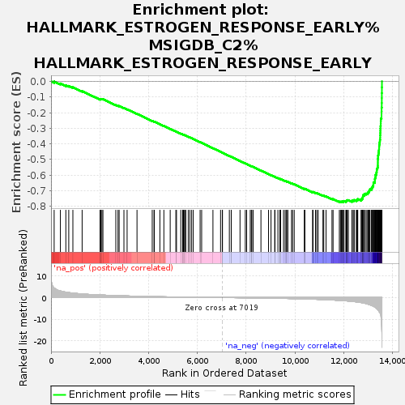
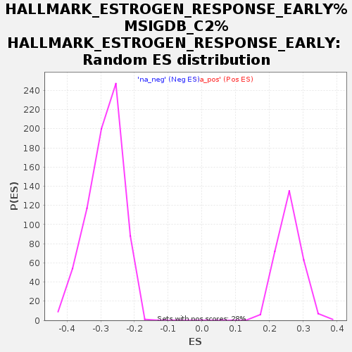

| | | Dataset | rank |
| Phenotype | NoPhenotypeAvailable |
| Upregulated in class | na_neg |
| GeneSet | HALLMARK_ESTROGEN_RESPONSE_EARLY%MSIGDB_C2%HALLMARK_ESTROGEN_RESPONSE_EARLY |
| Enrichment Score (ES) | -0.77378166 |
| Normalized Enrichment Score (NES) | -2.6867888 |
| Nominal p-value | 0.0 |
| FDR q-value | 0.0 |
| FWER p-Value | 0.0 |
Table: GSEA Results Summary

Fig 1: Enrichment plot: HALLMARK_ESTROGEN_RESPONSE_EARLY%MSIGDB_C2%HALLMARK_ESTROGEN_RESPONSE_EARLY
Profile of the Running ES Score & Positions of GeneSet Members on the Rank Ordered List
| PROBE | GENE SYMBOL | GENE_TITLE | RANK IN GENE LIST | RANK METRIC SCORE | RUNNING ES | CORE ENRICHMENT | | 1 | PMAIP1 | | | 128 | 4.375 | -0.0007 | No |
| 2 | ADD3 | | | 384 | 3.044 | -0.0136 | No |
| 3 | UGCG | | | 607 | 2.504 | -0.0251 | No |
| 4 | ELOVL5 | | | 727 | 2.291 | -0.0293 | No |
| 5 | CLDN7 | | | 896 | 2.041 | -0.0378 | No |
| 6 | SLC19A2 | | | 1275 | 1.670 | -0.0626 | No |
| 7 | FDFT1 | | | 2009 | 1.197 | -0.1149 | No |
| 8 | MREG | | | 2012 | 1.196 | -0.1126 | No |
| 9 | SLC1A1 | | | 2047 | 1.174 | -0.1128 | No |
| 10 | CXCL12 | | | 2088 | 1.156 | -0.1134 | No |
| 11 | DHRS3 | | | 2128 | 1.140 | -0.1140 | No |
| 12 | NXT1 | | | 2656 | 0.908 | -0.1515 | No |
| 13 | IL6ST | | | 2746 | 0.875 | -0.1564 | No |
| 14 | SEC14L2 | | | 2793 | 0.859 | -0.1581 | No |
| 15 | MICB | | | 2989 | 0.789 | -0.1711 | No |
| 16 | UNC119 | | | 3119 | 0.743 | -0.1792 | No |
| 17 | KLF10 | | | 3525 | 0.617 | -0.2082 | No |
| 18 | DHRS2 | | | 4149 | 0.461 | -0.2538 | No |
| 19 | AQP3 | | | 4222 | 0.439 | -0.2582 | No |
| 20 | ELF1 | | | 4237 | 0.435 | -0.2584 | No |
| 21 | ISG20L2 | | | 4463 | 0.387 | -0.2744 | No |
| 22 | RBBP8 | | | 4626 | 0.351 | -0.2858 | No |
| 23 | OPN3 | | | 4886 | 0.301 | -0.3045 | No |
| 24 | P2RY2 | | | 5118 | 0.261 | -0.3212 | No |
| 25 | CANT1 | | | 5144 | 0.256 | -0.3226 | No |
| 26 | ABAT | | | 5320 | 0.226 | -0.3352 | No |
| 27 | AMFR | | | 5397 | 0.215 | -0.3404 | No |
| 28 | NADSYN1 | | | 5398 | 0.215 | -0.3400 | No |
| 29 | TUBB2B | | | 5429 | 0.208 | -0.3418 | No |
| 30 | SYNGR1 | | | 5477 | 0.202 | -0.3449 | No |
| 31 | GLA | | | 5478 | 0.202 | -0.3445 | No |
| 32 | RASGRP1 | | | 5525 | 0.195 | -0.3476 | No |
| 33 | CISH | | | 5626 | 0.179 | -0.3547 | No |
| 34 | BLVRB | | | 5693 | 0.169 | -0.3593 | No |
| 35 | CD44 | | | 5765 | 0.158 | -0.3642 | No |
| 36 | SLC39A6 | | | 5831 | 0.146 | -0.3688 | No |
| 37 | TIPARP | | | 6112 | 0.111 | -0.3895 | No |
| 38 | REEP1 | | | 6175 | 0.103 | -0.3939 | No |
| 39 | KCNK15 | | | 6638 | 0.044 | -0.4283 | No |
| 40 | FRK | | | 6951 | 0.008 | -0.4516 | No |
| 41 | HES1 | | | 7023 | -0.001 | -0.4569 | No |
| 42 | FKBP5 | | | 7029 | -0.002 | -0.4572 | No |
| 43 | FOXC1 | | | 7311 | -0.034 | -0.4781 | No |
| 44 | FAM63A | | | 7388 | -0.041 | -0.4837 | No |
| 45 | SULT2B1 | | | 7389 | -0.042 | -0.4836 | No |
| 46 | PEX11A | | | 7748 | -0.086 | -0.5102 | No |
| 47 | CYP26B1 | | | 7965 | -0.111 | -0.5261 | No |
| 48 | FAM134B | | | 8020 | -0.119 | -0.5299 | No |
| 49 | ASB13 | | | 8167 | -0.140 | -0.5405 | No |
| 50 | FOS | | | 8214 | -0.148 | -0.5436 | No |
| 51 | PDLIM3 | | | 8233 | -0.151 | -0.5447 | No |
| 52 | INPP5F | | | 8290 | -0.160 | -0.5485 | No |
| 53 | TPBG | | | 8606 | -0.208 | -0.5716 | No |
| 54 | MPPED2 | | | 8917 | -0.261 | -0.5942 | No |
| 55 | BCL11B | | | 9019 | -0.283 | -0.6012 | No |
| 56 | KCNK5 | | | 9172 | -0.313 | -0.6119 | No |
| 57 | SNX24 | | | 9180 | -0.315 | -0.6118 | No |
| 58 | SLC1A4 | | | 9302 | -0.340 | -0.6201 | No |
| 59 | KRT18 | | | 9385 | -0.357 | -0.6255 | No |
| 60 | SLC26A2 | | | 9388 | -0.359 | -0.6250 | No |
| 61 | SYBU | | | 9413 | -0.364 | -0.6260 | No |
| 62 | SLC16A1 | | | 9533 | -0.394 | -0.6341 | No |
| 63 | GJA1 | | | 9599 | -0.410 | -0.6381 | No |
| 64 | DYNLT3 | | | 9655 | -0.425 | -0.6414 | No |
| 65 | SLC37A1 | | | 9658 | -0.425 | -0.6407 | No |
| 66 | JAK2 | | | 9710 | -0.438 | -0.6436 | No |
| 67 | KRT8 | | | 9861 | -0.478 | -0.6538 | No |
| 68 | XBP1 | | | 9901 | -0.487 | -0.6557 | No |
| 69 | RAPGEFL1 | | | 9970 | -0.507 | -0.6598 | No |
| 70 | CALCR | | | 10393 | -0.629 | -0.6900 | No |
| 71 | BHLHE40 | | | 10395 | -0.629 | -0.6888 | No |
| 72 | MUC1 | | | 10401 | -0.630 | -0.6879 | No |
| 73 | TBC1D30 | | | 10729 | -0.751 | -0.7108 | No |
| 74 | SLC7A2 | | | 10735 | -0.754 | -0.7097 | No |
| 75 | BAG1 | | | 10739 | -0.755 | -0.7084 | No |
| 76 | RET | | | 10842 | -0.792 | -0.7144 | No |
| 77 | WFS1 | | | 10895 | -0.813 | -0.7166 | No |
| 78 | ZNF185 | | | 10952 | -0.838 | -0.7191 | No |
| 79 | AR | | | 11148 | -0.925 | -0.7318 | No |
| 80 | GFRA1 | | | 11182 | -0.941 | -0.7323 | No |
| 81 | PLA2G16 | | | 11277 | -0.992 | -0.7374 | No |
| 82 | SFN | | | 11519 | -1.122 | -0.7531 | No |
| 83 | SCARB1 | | | 11563 | -1.142 | -0.7540 | No |
| 84 | MED24 | | | 11821 | -1.315 | -0.7705 | No |
| 85 | PPIF | | | 11866 | -1.346 | -0.7711 | Yes |
| 86 | FARP1 | | | 11902 | -1.376 | -0.7709 | Yes |
| 87 | SVIL | | | 11938 | -1.406 | -0.7707 | Yes |
| 88 | DHCR7 | | | 11956 | -1.417 | -0.7691 | Yes |
| 89 | TPD52L1 | | | 11997 | -1.448 | -0.7691 | Yes |
| 90 | MAST4 | | | 12009 | -1.461 | -0.7670 | Yes |
| 91 | ELOVL2 | | | 12090 | -1.529 | -0.7699 | Yes |
| 92 | SLC2A1 | | | 12098 | -1.533 | -0.7673 | Yes |
| 93 | CCND1 | | | 12124 | -1.554 | -0.7660 | Yes |
| 94 | PTGES | | | 12126 | -1.556 | -0.7629 | Yes |
| 95 | LRIG1 | | | 12147 | -1.567 | -0.7613 | Yes |
| 96 | ELF3 | | | 12189 | -1.605 | -0.7611 | Yes |
| 97 | MYC | | | 12339 | -1.776 | -0.7686 | Yes |
| 98 | ESRP2 | | | 12341 | -1.777 | -0.7651 | Yes |
| 99 | MAPT | | | 12347 | -1.781 | -0.7619 | Yes |
| 100 | SEMA3B | | | 12415 | -1.847 | -0.7631 | Yes |
| 101 | TGIF2 | | | 12429 | -1.866 | -0.7603 | Yes |
| 102 | KLF4 | | | 12517 | -1.996 | -0.7628 | Yes |
| 103 | MYBL1 | | | 12532 | -2.018 | -0.7597 | Yes |
| 104 | TOB1 | | | 12572 | -2.075 | -0.7585 | Yes |
| 105 | TIAM1 | | | 12573 | -2.075 | -0.7543 | Yes |
| 106 | PODXL | | | 12716 | -2.314 | -0.7602 | Yes |
| 107 | TFAP2C | | | 12719 | -2.319 | -0.7556 | Yes |
| 108 | ABHD2 | | | 12756 | -2.404 | -0.7535 | Yes |
| 109 | SLC27A2 | | | 12761 | -2.414 | -0.7489 | Yes |
| 110 | FAM102A | | | 12782 | -2.462 | -0.7454 | Yes |
| 111 | TMEM164 | | | 12785 | -2.471 | -0.7405 | Yes |
| 112 | MYB | | | 12788 | -2.474 | -0.7357 | Yes |
| 113 | ALDH3B1 | | | 12800 | -2.492 | -0.7315 | Yes |
| 114 | ARL3 | | | 12805 | -2.511 | -0.7267 | Yes |
| 115 | CELSR1 | | | 12859 | -2.617 | -0.7254 | Yes |
| 116 | SH3BP5 | | | 12860 | -2.619 | -0.7201 | Yes |
| 117 | TJP3 | | | 12923 | -2.772 | -0.7191 | Yes |
| 118 | RHOBTB3 | | | 12983 | -3.007 | -0.7174 | Yes |
| 119 | ADCY9 | | | 12995 | -3.053 | -0.7120 | Yes |
| 120 | RPS6KA2 | | | 13019 | -3.129 | -0.7074 | Yes |
| 121 | MYBBP1A | | | 13045 | -3.224 | -0.7028 | Yes |
| 122 | ABLIM1 | | | 13053 | -3.268 | -0.6967 | Yes |
| 123 | STC2 | | | 13076 | -3.366 | -0.6915 | Yes |
| 124 | FKBP4 | | | 13138 | -3.613 | -0.6888 | Yes |
| 125 | PAPSS2 | | | 13145 | -3.649 | -0.6818 | Yes |
| 126 | MED13L | | | 13176 | -3.804 | -0.6764 | Yes |
| 127 | SYT12 | | | 13196 | -3.903 | -0.6699 | Yes |
| 128 | BCL2 | | | 13215 | -4.003 | -0.6632 | Yes |
| 129 | OLFM1 | | | 13217 | -4.017 | -0.6551 | Yes |
| 130 | SLC22A5 | | | 13220 | -4.031 | -0.6471 | Yes |
| 131 | ITPK1 | | | 13274 | -4.410 | -0.6421 | Yes |
| 132 | NAV2 | | | 13277 | -4.430 | -0.6333 | Yes |
| 133 | INHBB | | | 13278 | -4.431 | -0.6244 | Yes |
| 134 | DEPTOR | | | 13291 | -4.499 | -0.6162 | Yes |
| 135 | FHL2 | | | 13303 | -4.593 | -0.6077 | Yes |
| 136 | CHPT1 | | | 13304 | -4.594 | -0.5984 | Yes |
| 137 | ADCY1 | | | 13337 | -4.929 | -0.5908 | Yes |
| 138 | KDM4B | | | 13344 | -4.979 | -0.5812 | Yes |
| 139 | IGF1R | | | 13354 | -5.078 | -0.5716 | Yes |
| 140 | THSD4 | | | 13355 | -5.081 | -0.5613 | Yes |
| 141 | DLC1 | | | 13383 | -5.360 | -0.5525 | Yes |
| 142 | AFF1 | | | 13395 | -5.541 | -0.5421 | Yes |
| 143 | ABCA3 | | | 13398 | -5.624 | -0.5309 | Yes |
| 144 | HR | | | 13399 | -5.624 | -0.5195 | Yes |
| 145 | B4GALT1 | | | 13400 | -5.643 | -0.5081 | Yes |
| 146 | FLNB | | | 13401 | -5.650 | -0.4967 | Yes |
| 147 | NCOR2 | | | 13407 | -5.756 | -0.4854 | Yes |
| 148 | RRP12 | | | 13409 | -5.778 | -0.4738 | Yes |
| 149 | CBFA2T3 | | | 13423 | -5.901 | -0.4628 | Yes |
| 150 | CELSR2 | | | 13432 | -6.007 | -0.4513 | Yes |
| 151 | FASN | | | 13443 | -6.322 | -0.4392 | Yes |
| 152 | WWC1 | | | 13450 | -6.456 | -0.4266 | Yes |
| 153 | RARA | | | 13453 | -6.482 | -0.4137 | Yes |
| 154 | KAZN | | | 13459 | -6.586 | -0.4007 | Yes |
| 155 | TGM2 | | | 13474 | -6.809 | -0.3880 | Yes |
| 156 | TTC39A | | | 13484 | -7.063 | -0.3744 | Yes |
| 157 | SLC7A5 | | | 13495 | -7.246 | -0.3605 | Yes |
| 158 | ENDOD1 | | | 13496 | -7.249 | -0.3458 | Yes |
| 159 | GAB2 | | | 13499 | -7.331 | -0.3311 | Yes |
| 160 | RAB31 | | | 13502 | -7.411 | -0.3163 | Yes |
| 161 | AKAP1 | | | 13505 | -7.484 | -0.3013 | Yes |
| 162 | PRSS23 | | | 13510 | -7.621 | -0.2862 | Yes |
| 163 | IL17RB | | | 13517 | -7.971 | -0.2705 | Yes |
| 164 | SIAH2 | | | 13519 | -8.042 | -0.2543 | Yes |
| 165 | NRIP1 | | | 13522 | -8.347 | -0.2376 | Yes |
| 166 | IGFBP4 | | | 13549 | -11.133 | -0.2170 | Yes |
| 167 | CA12 | | | 13550 | -11.539 | -0.1937 | Yes |
| 168 | SLC9A3R1 | | | 13553 | -12.465 | -0.1686 | Yes |
| 169 | TSKU | | | 13559 | -14.909 | -0.1388 | Yes |
| 170 | GREB1 | | | 13561 | -15.680 | -0.1072 | Yes |
| 171 | PGR | | | 13562 | -15.758 | -0.0753 | Yes |
| 172 | HSPB8 | | | 13565 | -18.497 | -0.0381 | Yes |
| 173 | MYOF | | | 13567 | -18.889 | 0.0001 | Yes |
Table: GSEA details [plain text format]

Fig 2: HALLMARK_ESTROGEN_RESPONSE_EARLY%MSIGDB_C2%HALLMARK_ESTROGEN_RESPONSE_EARLY: Random ES distribution
Gene set null distribution of ES for HALLMARK_ESTROGEN_RESPONSE_EARLY%MSIGDB_C2%HALLMARK_ESTROGEN_RESPONSE_EARLY